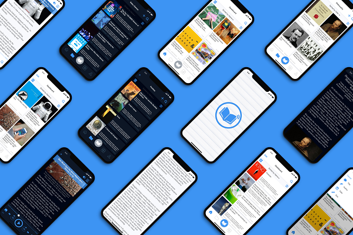

<ion-menu [content]="content">


  <!-- <ion-header  no-border>
    <ion-toolbar>
      <ion-title>Menu</ion-title>
    </ion-toolbar>
  </ion-header> -->

  

  <ion-content class="mainMenu">


      <div class="userProfile">

          

      </div>

      <div ion-item menuClose no-border class="bluerow">

              <p class="item-note" item-start> 
                  <ion-icon name="person" item-start></ion-icon>

                 Welcome Guest  

                </p>     
      </div>


      <ion-list no-lines style="border: none;" class="menuItem">


          <button menuClose no-border ion-item *ngFor="let p of pages" (click)="openPage(p)">
          

            <ion-icon name="{{p.icon}}" item-start color="primary"></ion-icon>

           <div class="item-note" item-start>
              {{p.title}}
            </div>

            <!-- <ion-icon name="arrow-dropright" item-end></ion-icon> -->

        </button>


      </ion-list>
  


  </ion-content>

    

  <ion-footer no-border >

      <button menuClose no-border ion-item>
          
         <ion-icon name="options" item-start color="secondary"></ion-icon>
         <div class="item-note" item-start (click)="openFooterPage()" >  Settings  </div>

      </button>

  </ion-footer>


</ion-menu>

<!-- Disable swipe-to-go-back because it's poor UX to combine STGB with side menus -->
<ion-nav [root]="rootPage" #content swipeBackEnabled="false"></ion-nav>